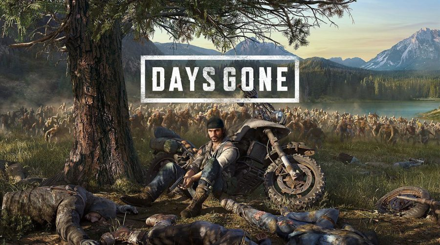

• Phasmophobia
Trailer do Jogo
Preço: R$28
Desenvolvedor: Kinetic Games
Destribuidor: Kinetic Games
Sinópse: O game dá aos participantes a missão de entrar em um local assombrado com um time de até quatro pessoas, como é feito em programas de TV sobre caçadores de fantasmas, e coletar evidências que comprovem a atividade paranormal no lugar. Um novo fantasma é gerado aleatoriamente com diferentes nomes, habilidades e características em cada nova partida. Enquanto fazem a investigação, os jogadores precisam explorar o comportamento dos fantasmas para obter provas, como fotos, impressões de mãos, gravações de voz e mais. Tudo isso sempre sob o risco de acabar morto pela assombração.
• CS:GO

Traile do Jogo
Preços:
Não Prime - Gratuito
Prime - R$76
Desenvolvedor: Valve
Destribuidor: Valve
Sinópse: CS:GO (Counter-Strike Global Ofensive) é um jogo de tiro em primeira pessoa que conta com vários modos de jogo multiplayer são eles: Modo Clássico Competitivo, Modo Clássico Casual, Demolição, Corrida Armada, Mata-Mata e outros. O jogo também conta com um modo singleplayer contra a inteligência artificial em diferentes níveis de dificuldade para a prática de mira e estratégias desenvolvidas pelos jogadores.
• Ready or Not

Trailer do Jogo
Preço: R$90
Desenvolvedor: Void Interactive
Destribuidor: Void Interactive
Sinópse: Ready or Not é um jogo de tiro em primeira pessoa, intenso, tático, atual e muito realista. Nele, as unidades policiais da SWAT são chamadas para controlar situações de hostilidade e de confronto. Cabe aos jogadores desenvolver sua tática para adentrar no local, neutralizar os agressores e controlar a situação. O jogo conta com um modo singleplayer e com um modo cooperativo de até 5 pessoas em um esquadrão da SWAT.
• GTA V

Trailer do Jogo
Preço: R$33
Desenvolvedor: Rockstar North
Destribuidor: Rockstar Games
Sinópse: O jogo se passa no estado ficcional de San Andreas, com a história da campanha um jogador seguindo três criminosos e seus esforços para realizarem assaltos sob a pressão de uma agência governamental. O mundo aberto permite que os jogadores naveguem livremente pelas áreas rurais e urbanas de San Andreas. Além do modo história o jogo também conta com um modo multiplayer com diversas opções de lazer.
• Days Gone
Trailer do Jogo
Preço: R$200 → R$100
Desenvolvedor: Bend Studio
Destribuidor: Play Station PC LLC
Sinópse: Days Gone é um jogo de mundo aberto com zumbis em um cenário pós-apocalíptico jogado em uma perspectiva de terceira-pessoa. Os jogadores controlam Deacon St. John, um viajante e caçador de recompensas que prefere viver uma vida perigosa na estrada, ao invés da vida nos acampamentos na floresta.
• Dead by Daylight
Trailer do Jogo
Preço: R$50
Desenvolvedor: Behaviour Interactive Inc.
Destribuidor: Behaviour Interactive Inc.
Sinópse: Dead by Daylight é jogado exclusivamente um jogador contra quatro, onde um jogador assume o papel do assassino selvagem, e os outros quatro jogadores jogam como sobreviventes, tentando escapar do assassino, reparando cinco geradores e abrindo os portões de saída para evitar ser capturado, enganchados e sacrificados.